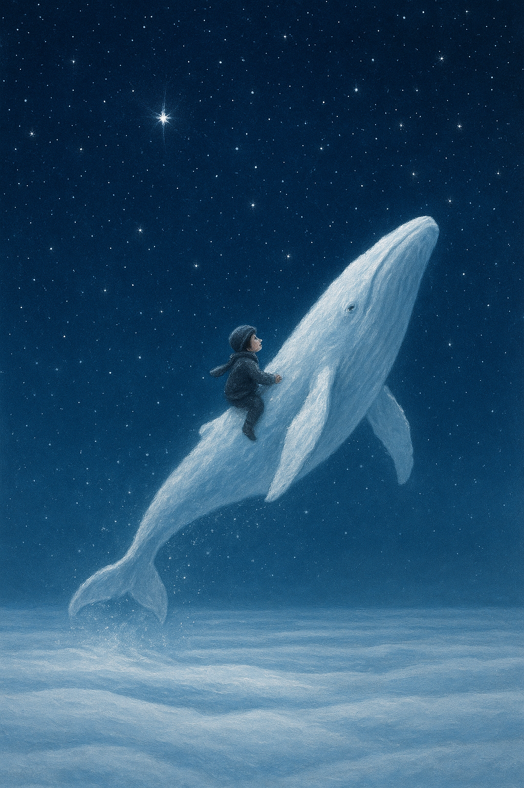

눈이 끝없이 내리던 어느 겨울날,
세상은 온통 하얀 침묵 속에 잠겨 있었다.
그 눈밭 한가운데, 아무도 모르는 바다가 숨 쉬고 있었다.
그 바다는 물이 아닌 눈으로 이루어졌고,
그 속엔 하얀 수염고래가 살고 있었다.
사람들은 그 고래를 눈고래라 불렀다.
눈고래는 밤이 되면 솟구쳐 올라
하늘의 별들과 인사를 나누고,
눈송이를 등에 실어 다시 바다로 내려갔다.
어느 날, 작은 아이가 눈밭에 길을 잃었다.
그 아이는 울지 않고 조용히 눈을 바라보았다.
그때, 눈고래가 솟구쳐 올라 아이 앞에 나타났다.
“너는 울지 않는구나,” 고래가 말했다.
“눈은 슬픔을 감싸 안는 법을 알고 있어.”
고래는 아이를 등에 태우고
하얀 바다를 건너 집으로 데려다주었다.
그날 이후, 아이는 눈이 내릴 때마다
하늘을 올려다보며 속삭였다.
“고마워, 눈고래.”
